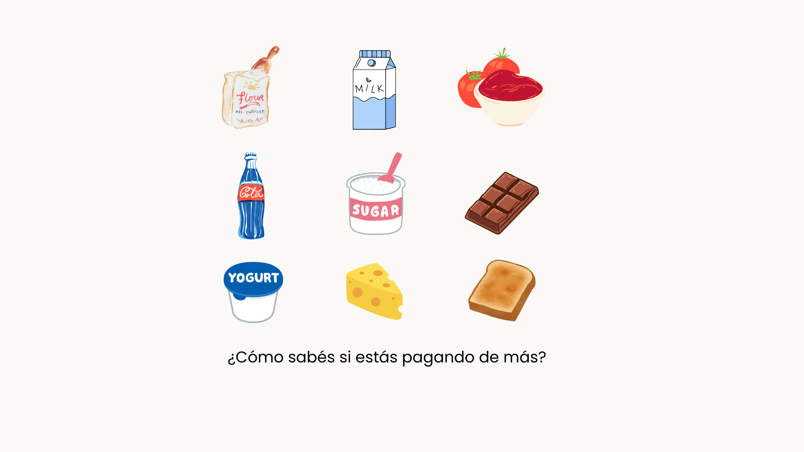
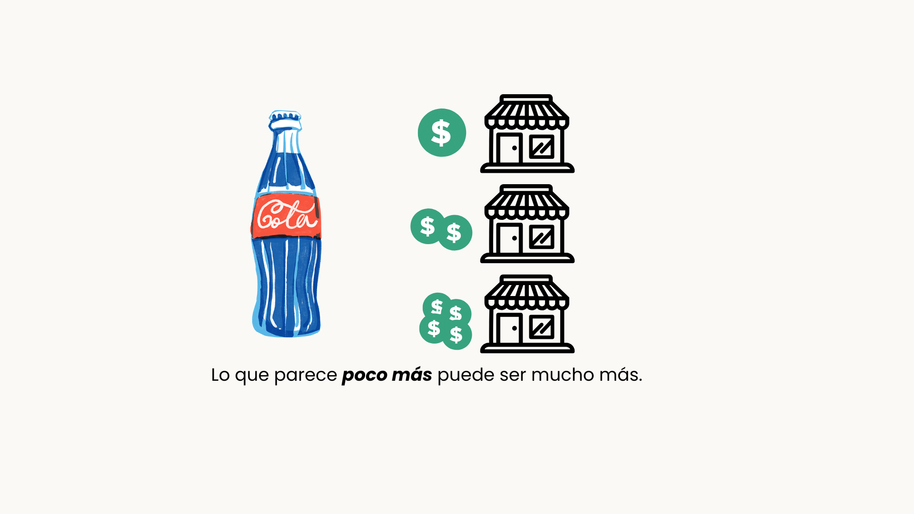
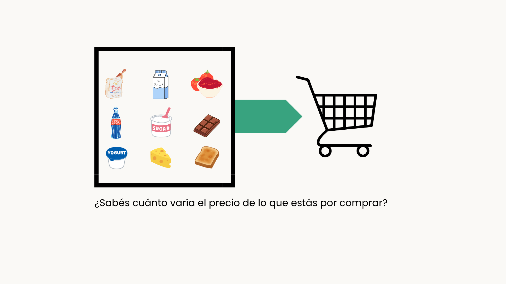

¡Bienvenido a Poco Más!
La web para ver, analizar y comparar la dispersión de precios



¿Qué es Poco Más?
Poco Más es un sitio web pensado para poder comparar precios de los productos más vendidos de CABA. En Poco Más, podés comparar la dispersión de precios de un producto y armar tu propio carrito para ver su dispersión.
¿Qué significa dispersión de precios?
El término "dispersión de precios" hace referencia a la variación de precios de un mismo producto en el mercado.
¿Los datos son reales?
Si! Todos los datos se obtienen mediante las bases de datos que publica de forma diaria el SEPA (Sistema Electrónico de Publicidad de Precios Argentinos).
¿Qué productos puedo analizar?
De momento, en Poco Más se pueden ver únicamente los precios de los 25 productos más vendidos en CABA.